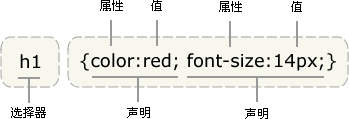

CSSコードスタイル規則

CSSコードの有効性
可能な限り有効なCSSコードを使用してください。
CSSバリデーターのプログラムエラーを処理する場合や、独自構文が必要な場合を除き、有効なCSSコードを使用してください。
次のようなW3C CSS validatorツールを使用して有効性をテストしてください。
有効なCSSを使用することは重要な品質指標です。効果のないCSSコードが見つかった場合は削除し、CSSの使用方法が適切であることを確認してください。
IDとclassの命名
IDとclassには、汎用的で意味のある名前を付けてください。
IDとclassの名前から、その要素が何のためにあるのかが分かるようにしてください。見た目や曖昧な命名は避けてください。
要素の具体的な目的に基づいて名前を付けることを優先してください。そうすれば最も理解しやすく、更新も少なくて済みます。
汎用的な名前は、兄弟要素が特別でなかったり、個別の意味を持たない要素に付けることができます。"helpers"のような汎用的な名前が適しています。
機能的または汎用的な名前を使用すると、不要なドキュメントやテンプレートの修正が減ります。
/* 不推荐: 无意义 不易理解 */
#yee-1901 {}
/* 不推荐: 表达不具体 */
.button-green {}
.clear {}
/* 推荐: 明确详细 */
#gallery {}
#login {}
.video {}
/* 推荐: 通用 */
.aux {}
.alt {}
IDとclassの命名スタイル
必要でない限り、IDとclassの名前はできるだけ簡潔にしてください。
IDやclassが何に関するものかを簡潔に伝えてください。
このようにすることで、コードは理解しやすく効率的になります。
/* 不推荐 */
#navigation {}
.atr {}
/* 推荐 */
#nav {}
.author {}
タイプセレクター
CSSタイプセレクターの使用は避けてください。
必要でない限り、要素のタグ名とIDまたはclassを組み合わせないでください。
パフォーマンス上の理由から、祖先ノードをセレクターとして使用することは避けてください。performance reasons.
/* 不推荐 */
ul#example {}
div.error {}
/* 推荐 */
#example {}
.error {}
プロパティの省略記法
プロパティ値を記述する際は、できるだけ省略記法を使用してください。
CSSの多くのプロパティは省略記法をサポートしています。shorthand（例：
font
）
省略記法を使用すると、コードの効率が向上し、理解が容易になります。
0と単位
必要でない限り
0
単位を後ろに付ける必要はありません。
margin: 0; padding: 0;
0で始まる小数
0で始まる小数では、小数点前の0を省略してください。
値または長さが-1から1の間の小数の場合、小数点前の
0
は省略して構いません。
font-size: .8em;
URIを囲む引用符
URIを囲む引用符は省略してください。
使用しないでください
url()
内で（
""
,
''
) 。
16進数
16進数は可能な限り3文字を使用してください。
色の値を書くときに使用します。3文字の16進数はより短く簡潔です。
/* 不推荐 */ color: #EEBBCC; /* 推荐 */ color: #ebc;
プレフィックス
セレクターの前に、特定のアプリケーションを示す識別プレフィックスを付けます（任意）。
大規模プロジェクトでは、IDまたはclass名の前にこのような識別用プレフィックス（名前空間）を付け、短いダッシュで連結するのが最善です。
名前空間を使用すると、命名の衝突を防ぎ、検索や置換操作などのメンテナンスが容易になります。
IDとclass命名の区切り文字
IDとclass名に複数の単語を使用する場合は、短いダッシュ「-」で区切ってください。
セレクター名には、短いダッシュ「-」以外の連結文字（何も使用しない場合も含む）を使用しないでください。名前の理解と検索を容易にするためです。
/* 不推荐：“demo”和“image”中间没加“-” */
.demoimage {}
/* 不推荐：用下划线“_”是屌丝的风格 */
.error_status {}
/* 推荐 */
#video-id {}
.ads-sample {}
Hacks
厄介なCSSハックは避けるのが最善です。まず他の解決策を試してください。
ユーザーエージェントの検出や特別なCSSフィルターとして使えるという魅力的な面もありますが、その動作はあまりにも頻繁であり、長期的にプロジェクトの効率とコード管理を損なうため、他の解決策があればそちらを探してください。
CSSコードフォーマット規則
宣言の順序
アルファベット順に宣言してください。
すべてアルファベット順に宣言することで、覚えやすく保守も容易になります。
ブラウザ固有のプレフィックスの順序付けは無視しますが、複数のブラウザに固有のCSSプロパティのプレフィックスは相対的な順序を維持してください（例：-mozプレフィックスは-webkitの前）。
background: fuchsia; border: 1px solid; -moz-border-radius: 4px; -webkit-border-radius: 4px; border-radius: 4px; color: black; text-align: center; text-indent: 2em;
コードブロックの内容のインデント
すべてのコードブロック（「{}」の間）の内容をインデントしてください。
すべてのコードブロックの内容をインデントしてください。これにより階層構造の明確さが向上します。
宣言の終了
すべての宣言は「;」で終わらせてください。
一貫性と拡張性を考慮し、各宣言の末尾にセミコロンを付けてください。
/* 不推荐 */
.test {
display: block;
height: 100px
}
/* 推荐 */
.test {
display: block;
height: 100px;
}
プロパティ名の末尾
プロパティ名のコロンの後にスペースを1つ追加してください。
一貫性のため、プロパティ名と値の間にスペースを入れます（プロパティ名とコロンの間ではありません）。
/* 不推荐 */
h3 {
font-weight:bold;
}
/* 推荐 */
h3 {
font-weight: bold;
}
セレクターと宣言の改行
セレクターと宣言は別々の行にしてください。
各セレクターと各宣言はそれぞれ新しい行にしてください。
/* 不推荐 */
a:focus, a:active {
position: relative; top: 1px;
}
/* 推荐 */
h1,
h2,
h3 {
font-weight: normal;
line-height: 1.2;
}
ルールの改行
各ルールは独立した行にしてください。
各ルールの間は空行にしてください。
html {
background: #fff;
}
body {
margin: auto;
width: 50%;
}
CSSメタデータ規則
コメントセクション
グループごとにコメントを書いてください（任意）。
可能であれば、機能のカテゴリごとにスタイルシートのグループに統一したコメントを書き、独立した行にしてください。
/* Header */
#adw-header {}
/* Footer */
#adw-footer {}
/* Gallery */
.adw-gallery {}
余談
一貫性の原則を守る
コードを編集する場合は、最初に数分間そのコードスタイルを確認してください。そのスタイルがこの方法を採用しているなら、あなたも同じようにすべきです。
スタイルが統一されていれば、共通の思考環境が生まれ、参加者はあなたが何を言おうとしているかに集中できます。あなたがどの星の言語を話しているのかを考える必要はありません。ここで統一スタイル規則を提案していますが、それは皆に知ってもらい、参考にして自分のスタイルを修正してもらいたいだけです。もちろん、自分独自のスタイルを保つことも重要です。などなど……